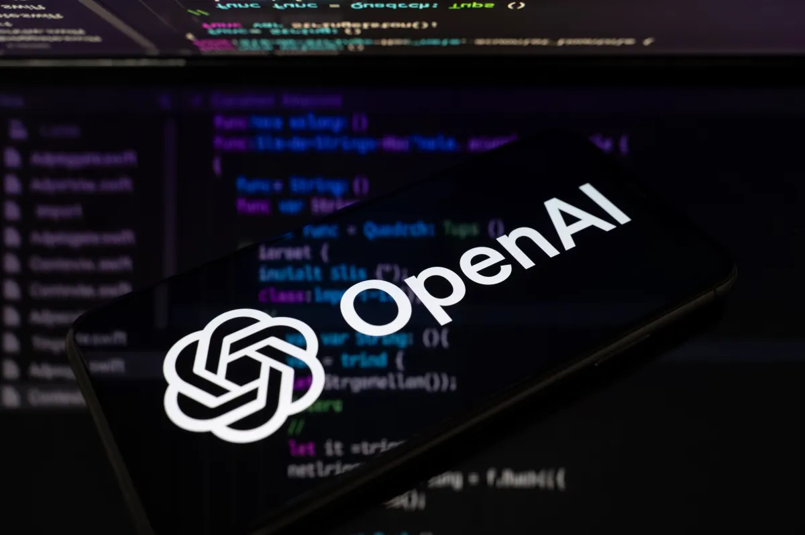
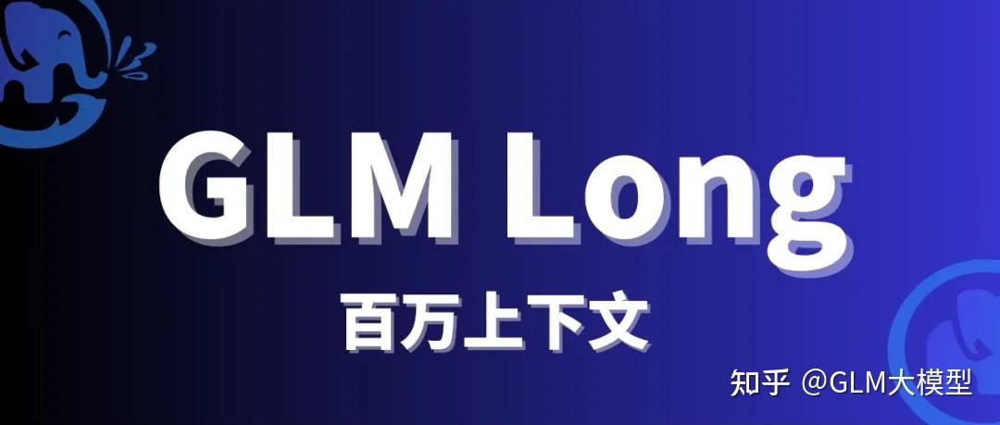
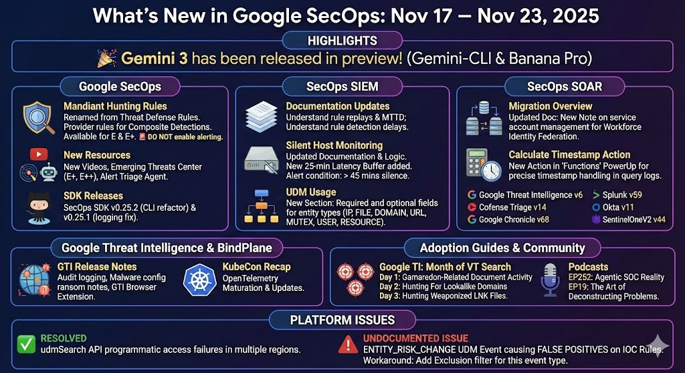
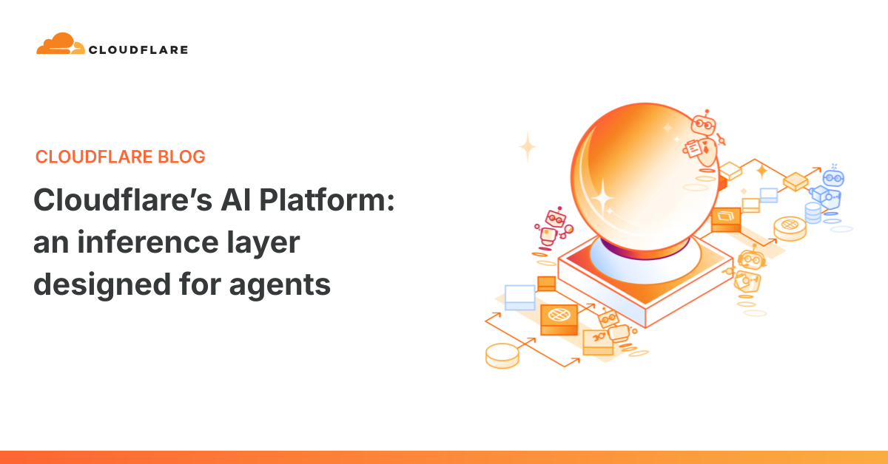
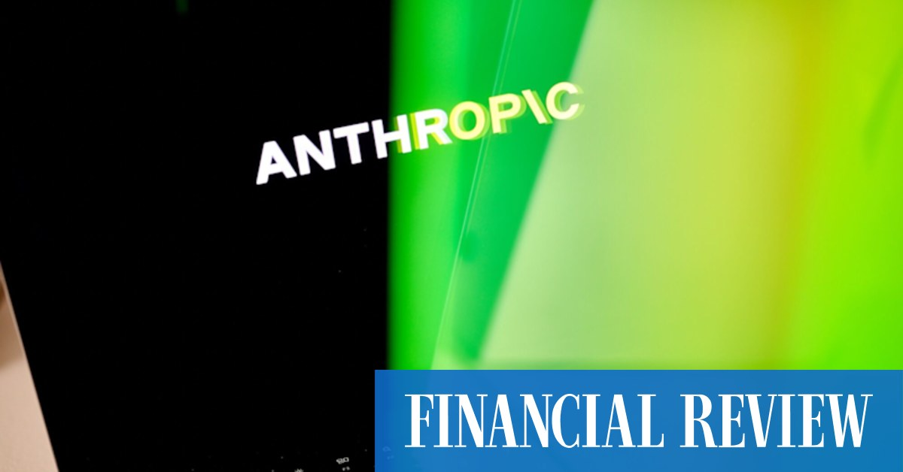
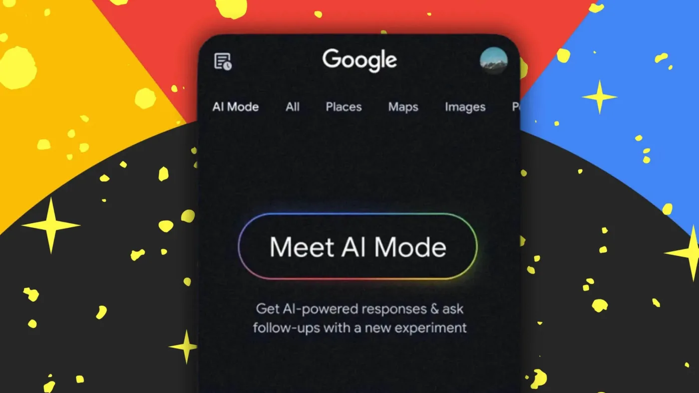

2026-06-15 // VOL_258
AI 进入管制区
模型公司从炫技切到合规、企业和 Agent 入口战
OpenAI 刚冲 IPO 就被 42 州检察长调查，Anthropic 因美国政府限制暂停新模型访问，Google 把搜索做成 24/7 信息 Agent，Vercel 推 HarnessAgent 反锁定，LiteLLM 被 CISA 点名。今天的 AI 不是在炫模型，是在被企业、监管和安全现实硬拽上牌桌。
📌 今日趋势：模型公司进入管制区
今天的共同主线不是谁又多跑了几个 benchmark，而是 AI 开始被真实世界接管：OpenAI 被州检察长追问用户伤害和数据处理，Anthropic 的新模型被政府限制牵着走，Google 搜索 Agent 和 Vercel HarnessAgent 则把 Agent 从演示拉进日常工作流。
对中国创作者和中小企业来说，这意味着选模型不能只看聪明不聪明。你要看它能不能稳定用、成本会不会突然变脸、数据和账号会不会被平台规则卡死。能落地的不是最会聊天的模型，而是能被审计、能替人值班、能接进业务的那一层。
接下来 2-4 周重点盯三件事：OpenAI 调查是否扩大到产品限制，Anthropic 的政府访问争议是否影响 API 和企业合同，Google、Vercel、Cloudflare 这些入口型平台会不会把 Agent 标准先抢走。
01
Key Intelligence
全球要闻

TechCrunch
OpenAI 被42州检察长盯上
来源: TechCrunch · 2026-06-15 · 原文链接
TechCrunch 报道，美国多州检察长联盟已对 OpenAI 展开调查，纽约总检察长办公室向 OpenAI 发出传票，索取与广告、用户留存、模型 sycophancy、消费者数据、健康数据，以及未成年人和老年人保护相关的文件。时间点很刺眼：OpenAI 近期刚被曝秘密提交上市文件。
Janet 锐评：
OpenAI 最怕的不是多一个竞品，而是 ChatGPT 从工具变成公共风险样本。只要调查抓住未成年人、健康建议和数据处理，产品迭代就会被法律流程拖慢。做海外 AI 应用的团队现在要把安全日志、用户同意和高风险场景提示补齐，不然你不是在做产品，是在给律师攒素材。
TechCrunch / Seeking Alpha
Anthropic 被白宫按下暂停键
来源: TechCrunch / Seeking Alpha · 2026-06-15 · 原文链接
TechCrunch 与 Seeking Alpha 等媒体报道，Anthropic 因美国政府对最新模型访问限制而陷入争议。印度市场也开始讨论：当一家前沿模型公司可以因为政策压力暂停新模型访问，依赖海外闭源模型的国家和企业到底还有多少主动权。
Janet 锐评：
Anthropic 一直卖安全人设，现在轮到它被安全逻辑反噬。政府一出手，所谓全球可用立刻变成分区供给，企业合同也会跟着紧张。国内公司别把关键工作流全押在单一海外模型上，至少要准备国产模型、开源模型和本地缓存三层退路。真正的风险不是模型变笨，是你的业务突然没有备用路。
PPC Land / Moneycontrol
Google 搜索开始替人盯网
来源: PPC Land / Moneycontrol · 2026-06-15 · 原文链接
PPC Land 报道，Google 已把 Search agents 扩展到所有 AI Mode 语言和市场，面向 Google AI Ultra 订阅用户开放。这些信息 Agent 可以 24/7 监控开放网页、新闻、社交和结构化实时数据，在发现相关变化后主动汇总并推送带链接的结果。
Janet 锐评：
这不是搜索升级，这是 Google 把搜索从一次性问答改成长期值班。创作者最先受影响：选题监控、竞品跟踪、价格观察会被系统自动化，手工刷信息流会越来越蠢。真正要练的是如何给 Agent 写监控任务，而不是每天假装自己很勤奋地刷新网页。谁先把情报任务产品化，谁就少花一半编辑时间。
The Korea Herald
韩国大厂把 Agent 铺到工位
来源: The Korea Herald · 2026-06-15 · 原文链接
The Korea Herald 报道，Samsung、SK、LG 等韩国企业正在加速把 AI Agent 部署到办公场景，从文档、客服、研发协作到内部知识检索，目标不是做演示，而是让每个员工桌面都有可调用的 AI 助手。
Janet 锐评：
韩国企业这波很现实：不争谁模型更玄学，先看每个工位能不能少耗一个人。老板应该学这个节奏，先从财务、客服、运营、销售支持这些可量化岗位开刀。Agent 不需要一次替掉公司，它只要先吃掉重复劳动，组织成本曲线就会变形。别等完美系统，先让一个部门跑出节省工时的数字。
Help Net Security / CISA
LiteLLM 漏洞把AI网关打成入口
来源: Help Net Security / CISA · 2026-06-15 · 原文链接
Help Net Security 的周报提到，BerriAI LiteLLM 的命令注入漏洞 CVE-2026-42271 已被攻击者利用，并被 CISA 加入 Known Exploited Vulnerabilities 目录。LiteLLM 常被企业用作统一模型网关，一旦网关被打穿，后面接的模型、密钥和业务系统都会被牵连。
Janet 锐评：
AI 网关正在变成新的入口服务器，很多团队还拿它当开发小工具乱部署。最危险的不是模型胡说，是网关拿着一堆密钥还裸奔。做企业 AI 的人今天就该查版本、隔离凭证、限制执行环境，不要等客户数据被拖走才开始补安全课。模型层越统一，安全边界越要前移。
02
Model Updates
模型动态

X AI Digest / Threads
GLM-5.2 用百万上下文卷代码
来源: X AI Digest / Threads · 2026-06-15 · 原文链接
开发者社区 6 月 14 日集中讨论智谱 GLM-5.2 coding model，核心卖点是 1M context、长程编程能力，以及面向 GLM Coding 的计划、API 和聊天入口。它指向的不是普通问答，而是让模型接手更长项目上下文。
Janet 锐评：
百万上下文不是炫数字，真正价值是少丢项目记忆。代码团队最痛的是模型看不完整个仓库，只能靠人反复喂背景。要试这类模型，别拿小 demo 测，直接丢多模块重构、跨文件 bug 和长文档问答，看它能不能少犯低级失忆病。能稳定吃长仓库，才配谈工程生产力。
UsageBox / The AI Consulting Network
Claude 计费把Agent工作流拆池
来源: UsageBox / The AI Consulting Network · 2026-06-15 · 原文链接
多家成本管理博客提醒，Anthropic 从 6 月 15 日开始把 agentic Claude 使用从普通订阅池中拆出，自动化工作流将更接近按量计费。Claude Code、长时间任务和企业自动化使用，不再适合用个人订阅思维估算。
Janet 锐评：
这是所有重度 Claude Code 用户迟早要面对的账单真相。平台不会永远补贴你拿订阅跑自动化工厂，算力总会回到单价上。团队要尽快把任务分层：高价值推理给 Claude，批量清洗、摘要和低风险代码交给便宜模型或本地模型。账单结构变了，工作流架构也要跟着变。

Google SecOps / Medium
Google SecOps 让Agent巡防告警
来源: Google SecOps / Medium · 2026-06-15 · 原文链接
Google SecOps 6 月 14 日更新中提到 Detection Coverage Agent 等安全运营能力，围绕 Google AI Threat Defense，把检测覆盖、威胁分析和响应建议交给 Agent 协助完成。AI 安全不再只是写规则，而是让系统持续找盲点。
Janet 锐评：
安全团队缺的不是更多告警，是有人帮你把盲区翻出来。Agent 巡防的价值在于连续性，它不会因为夜里两点就懒得看日志。中小企业买不起大安全团队，可以先从云安全告警整理、漏洞优先级排序和应急报告生成切入。先让 AI 做值班员，再谈自动响应，别上来就幻想全自动防御。

Cloudflare Agents SDK / Threads
Cloudflare 让Agent状态自己存
来源: Cloudflare Agents SDK / Threads · 2026-06-15 · 原文链接
开发者社区记录 Cloudflare Agents SDK 的新示例和文档更新，重点展示 Hono counter agent 的状态持久化与面向人类、也面向 AI 阅读的项目说明。对边缘计算平台来说，Agent 能记住状态比单次调用更关键。
Janet 锐评：
Agent 如果每次醒来都像失忆，那就只能当高级脚本。状态持久化让它开始像一个小服务，能追踪任务、累积上下文、承接下一步动作。做工具的团队别只包装聊天框，先把状态、回滚和任务记录做扎实，那才是 Agent 产品和玩具的分界线。能记住过程，才有资格接业务流程。
03
Tech Insights
技术深度
TechCrunch / Tom's Hardware
OpenAI IPO 前先撞上合规墙
来源: TechCrunch / Tom's Hardware · 2026-06-15 · 原文链接
OpenAI 的多州调查与秘密上市文件几乎撞在同一周。监管关注点并不窄：广告、用户留存、模型迎合、敏感数据、未成年人和老年人。也就是说，ChatGPT 的商业增长、产品设计和安全承诺都可能被放到同一张桌上审。
Janet 锐评：
资本市场喜欢增长曲线，监管机构喜欢问增长是怎么来的。OpenAI 现在的问题不是能不能讲 AI 未来，而是能不能证明用户不是被产品机制推着沉迷。中国出海团队要从这里学一课：消费级 AI 不是流量游戏，高风险人群保护会变成产品基础设施。把合规当上线后补丁，后面会很贵。

AFR / Seeking Alpha
Anthropic 用安全牌反咬自己
来源: AFR / Seeking Alpha · 2026-06-15 · 原文链接
Anthropic 最近同时面对模型访问限制、政府争议、IPO 预期和计费调整。它过去最强的品牌叙事是安全，但当前局面显示，安全叙事一旦进入政府、资本和企业采购，就会变成限制条件，而不是单纯加分项。
Janet 锐评：
安全牌好打，但不好兑现。你说自己最安全，政府就会要求你按最严格标准证明；客户也会问为什么模型突然不能用。对企业用户来说，采购 Anthropic 这类前沿模型要同步评估政策风险，不要把安全口号等同于稳定供应。越是核心系统，越要准备第二供应商。

PPC Land / Google AI Mode Coverage
搜索从答案框变成值班员
来源: PPC Land / Google AI Mode Coverage · 2026-06-15 · 原文链接
Google Search agents 的关键不是回答一次问题，而是持续监控。它把搜索从用户主动输入，改成系统长期代看、代筛、代总结。这会影响 SEO、信息分发、新闻消费，也会改变企业情报和内容生产的节奏。
Janet 锐评：
以前抢搜索排名，是为了让人点进来；以后你要让 Agent 认为你可信。内容团队别再只研究关键词堆砌，要研究结构化信息、更新频率和可引用证据。谁能被 Agent 稳定抓取和总结，谁才会进入下一代流量入口。网站不是给人看就够了，还要给机器读得懂。
Help Net Security
AI 网关成黑客新靶子
来源: Help Net Security · 2026-06-15 · 原文链接
LiteLLM 漏洞被利用说明，模型网关已经进入攻击者视野。企业为了统一接入 OpenAI、Anthropic、Gemini、开源模型，常把网关放在关键流量路径上；一旦命令注入或凭证泄漏发生，攻击半径会比单个应用更大。
Janet 锐评：
很多 AI 团队还停留在把 key 塞进环境变量就能上线的阶段。网关越统一，爆炸半径越大，尤其是它同时握着模型密钥、日志和内部调用链。技术负责人今天该补的是最无聊的东西：最小权限、审计日志、依赖更新和网络隔离。别把模型网关放成全公司最肥的靶子。
04
Investment & Prediction
投资视角 · 大胆预测
今日核心预测
MLQ Predictions / Market Brief
AI IPO 让资金提前入场
来源: MLQ Predictions / Market Brief · 2026-06-15 · 原文链接
OpenAI、Anthropic 与围绕 SpaceX、xAI 的资本预期正在把 AI 二级市场故事提前点燃。MLQ 等市场简报把 AI IPO speculation 列为 6 月 14 日 IPO 市场的核心交易主题，说明投资人已经开始抢跑前沿模型公司的上市窗口。
Janet 锐评：
AI 公司还没证明利润模型，资本市场已经开始排队下注。短期这会抬高估值，长期会逼公司把免费用户、低价订阅和烧钱推理全部重新定价。创业者别被估值新闻冲昏头，现金流和毛利率会比参数表更快决定生死。二级市场不会无限替模型公司买单，最终还是要看收入质量。
The AI Insider
Prometheus 百亿融资烧实体AI
来源: The AI Insider · 2026-06-15 · 原文链接
AI Insider 报道，Jeff Bezos 相关的 physical AI startup Prometheus 完成 120 亿美元融资，估值达到 410 亿美元。虽然原始报道在 6 月 12 日发布，但 6 月 14 日仍在多处 AI 资本新闻中发酵，核心看点是资本开始押注实体世界里的 AI 自动化。
Janet 锐评：
钱从聊天机器人流向实体 AI，是一个很硬的信号。制造、物流、机器人和材料发现不会像 App 一样轻，但一旦跑通，护城河也更厚。国内企业要看的是供应链场景，不是追 Bezos 名字；谁能把 AI 放进真实工厂，谁才有下一轮议价权。实体场景慢，但一旦绑定流程就很难被替换。
The Korea Herald
韩国企业先用 Agent 换人效
来源: The Korea Herald · 2026-06-15 · 原文链接
韩国大型企业加速部署办公室 Agent，本质是把 AI 从研发预算转成组织效率账。它不需要等通用智能出现，只要把内部知识、流程审批、客服支持和数据分析先自动化，就能在企业内部形成可见回报。
Janet 锐评：
投资视角看，这类落地比模型发布更有含金量。员工每天少花 30 分钟处理重复流程，乘以万人组织就是实打实的人效红利。中国老板别只问哪个模型最强，应该问哪三个部门能在一个月内把 Agent 用到 KPI 里。能量化节省，才会进入预算，也才会持续采购。
05
Creator Toolbox
创作者工具箱
Janet 快车箱
DATA SOURCES: TechCrunch, TechCrunch / Seeking Alpha, PPC Land / Moneycontrol, The Korea Herald, Help Net Security / CISA, X AI Digest / Threads, UsageBox / The AI Consulting Network, Google SecOps / Medium, Cloudflare Agents SDK / Threads, TechCrunch / Tom's Hardware, AFR / Seeking Alpha, PPC Land / Google AI Mode Coverage, Help Net Security, MLQ Predictions / Market Brief, The AI Insider, AI Builders Digest / Verceljanet-public-site · © 2026 Janet Yao